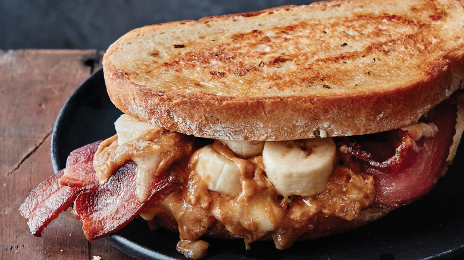

The Elvis Sandwich

Description
The peanut butter and banana sandwich has been referred to as a favorite of Elvis Presley, who was renowned for his food cravings such as the Fool's Gold Loaf, a loaf of French white bread filled with a pound each of bacon, peanut butter, and grape jelly.
Ingredients
- 3 tablespoons peanut butter
- 2 slices white breaad
- 1 banana, peeled and sliced
- 3 slices cooked bacon
- 1 1/2 teaspoons butter
Steps
- Spread the peanut butter on one side of one slice of bread. Top with sliced banana, then slices of cooked bacon. Cover with the other slice of bread. Spread butter on the outside of the sandwich.
- Heat a skillet over medium heat. Fry the sandwich on each side until golden brown and peanut butter is melted, about 4 minutes total.